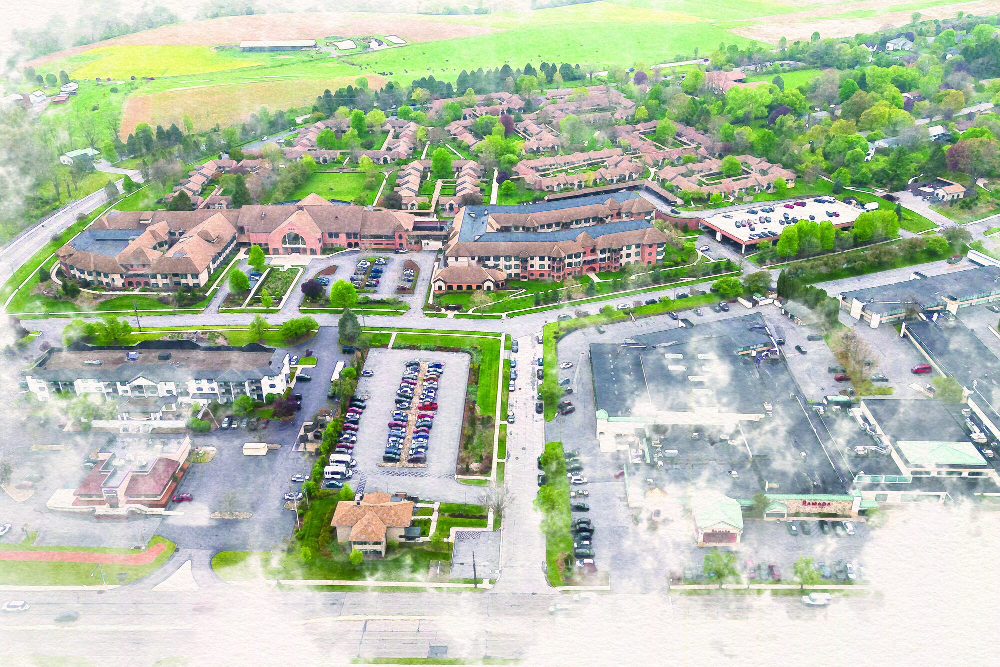
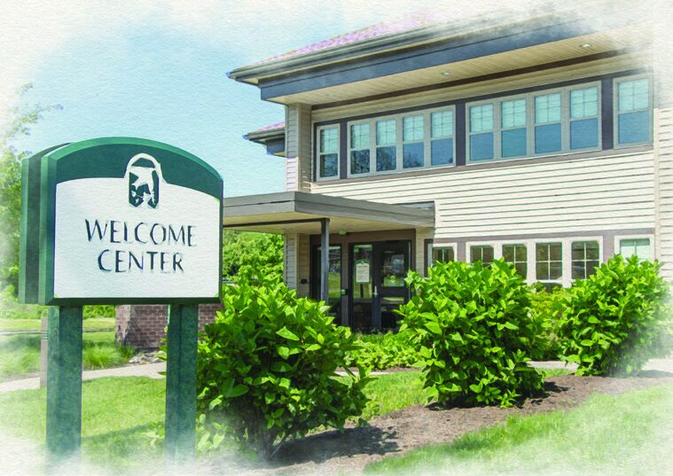

Everything you need — connected by gardens, walking paths, and covered walkways.

Home to Anthony House and Darlington House — Foxdale’s personal care, skilled nursing, and memory support neighborhoods.
The heart of Foxdale life. Inside you’ll find the Café and Dining Room, gift shop, library, auditorium, art studio and gallery, model railroad room, and woodworking shop.
Nine cottage neighborhoods connected by covered walkways, offering floor plans from studios to two-bedroom, two-bath homes.
A peaceful water feature and native plantings, with a paved walkway and benches perfect for a relaxing stroll or quiet rest.
Parking for residents, staff, and guests, with convenient electric vehicle charging stations on the lower level.
Three stories of apartment homes, from one-bedroom layouts to two-bedroom homes with sunrooms — plus two guest rooms for visiting family and friends.
A fully equipped fitness studio and therapy pool, with weekly wellness classes led by full-time exercise specialists.
Meet with Residency Planning Counselors to learn about residences, contract options, availability, and the move-in process.
Downtown State College and Penn State University offer a diverse mix of dining, lectures, performances, and cultural or sporting events. Art lovers will find an abundance of museums and galleries throughout the region.
Scheduled shopping trips, free medical appointment transportation within a 15-mile radius, and free CATA bus service for those 65 and older make getting there easy.
See Life at Foxdale
Walk the gardens, tour the Community Center, and get a feel for the neighborhood.